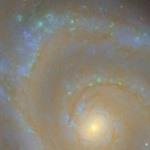

David W. Hogg's main research interests are in observational cosmology, especially approaches that use galaxies (including our own Milky Way) to infer the physical properties of the Universe. He also works on models of stellar spectroscopy and exoplanet measurement and discovery. In all areas, he is interested in developing the engineering systems that make these projects possible, for his group and for the astrophysics community as a whole. His research is or has been recently supported by New York University, NASA, the NSF, the Moore Foundation, the Sloan Foundation, the Humboldt Foundation, and the Simons Foundation.Hogg is working towards several comprehensive projects in observational astrophysics, including the measurement and simultaneous analysis of every galaxy (above some mass) in the observable Universe, every star (above some brightness) in our Galaxy, or every image (above some quality) taken by any astronomical camera. The comprehensive goals are long-term goals, but he is involved in present-day projects that work towards them, including Astrometry.net, Gaia, NYU-VAGC, and SDSS.
For more information consult his research diary, preprints, refereed publications, or CV.